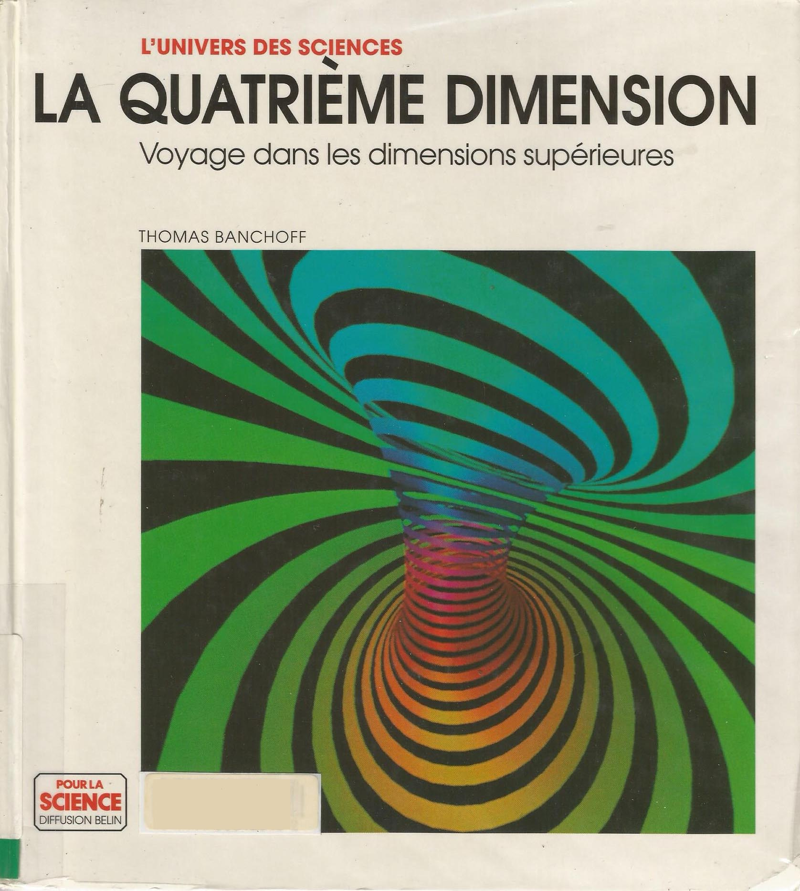
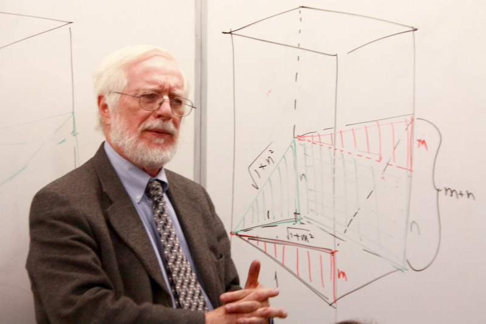

Le livre
Ce livre mathématique traite d’une autre dimension et ses mécanismes.
"La quatrième dimension" est un ouvrage de Thomas Banchoff paru en version française en 1996. Le livre cherche à vulgariser les dimensions supérieures grace à beaucoup d’analogies aux dimensions inférieures. Sa source d'inspiration majeure étant le livre Flatland. le degrès de complexité évolue de tel sorte que la fin plus adaptée à un public aguerri. L’auteur approfondit les mécaniques comportementales des objets et traite des cas particuliers de cette dimension supérieure. Le tout est accompagné d’images représentatives générées par ordinateur. Attention cependant, le mathématicien ne cherche pas à démontrer l’existence de telles dimensions, mais à en étudier les particularités géométriques.
« Ce livre résume une quarantaine d’années d’engouement pour un sujet qui ne cesse de révéler de nouveaux aspects »
Traduit, Thomas Banchoff.
L’auteur
Un professeur de math et apôtre en chef de la quatrième dimension.
Thomas Banchoff est un mathématicien américain spécialisé en géométrie. Depuis 1967, il enseigne à l’université Brown dans le Rhode Island. Mr Banchoff fut même président d’une des deux grandes associations américaines pour les mathématiques dont il est membre. Tous ses travaux tournent autour des comportements des objets en 3 et 4 dimensions. En 1990, il publie le livre : « Beyond the Third Dimension: Geometry, Computer Graphics, and Higher Dimensions » (Scientific American Library) qui fut traduit en français 6 ans plus tard.
« La technique de parallélisme de Flatland reste un des outils les plus puissants pour traiter des ensembles dans des dimensions plus hautes. »
Traduit, Thomas Banchoft.